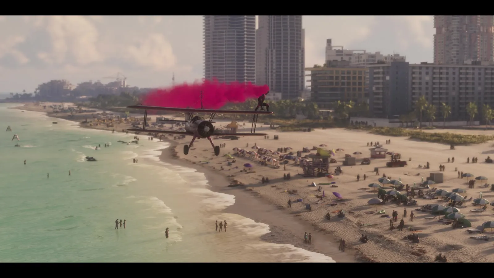
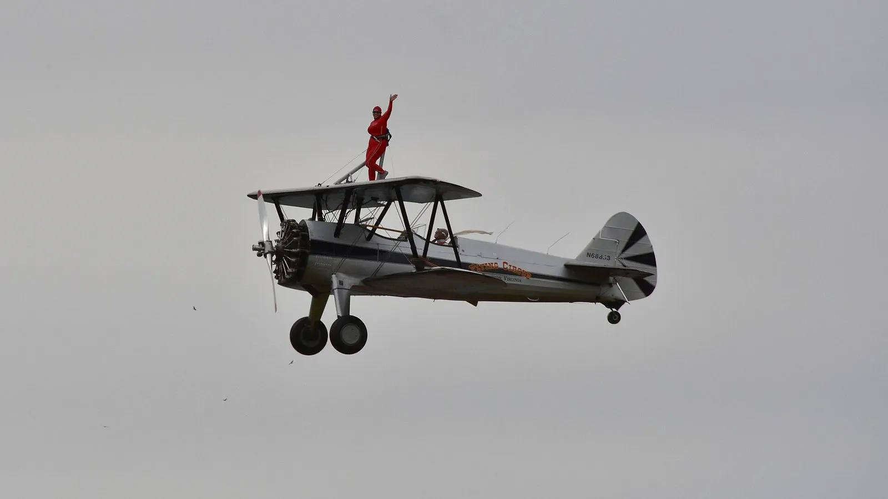
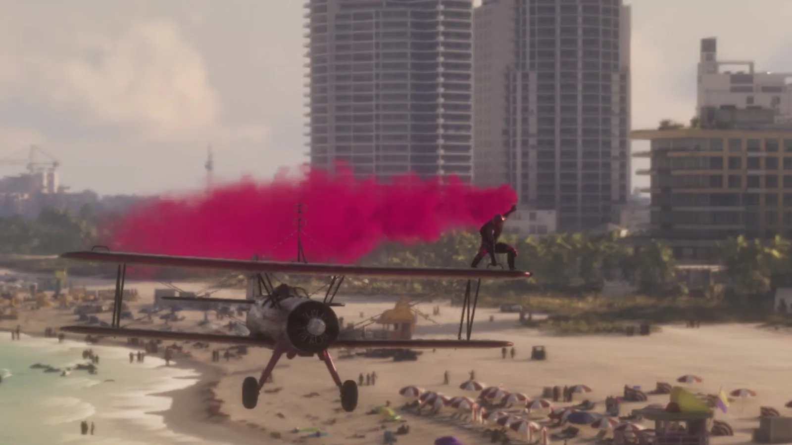
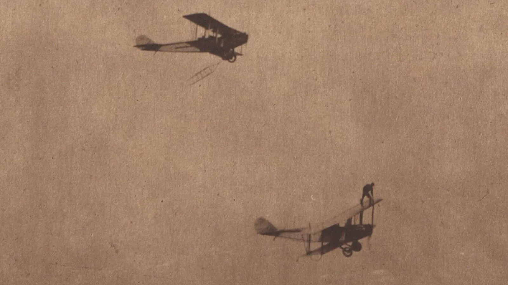

Человек на крыле биплана из трейлера GTA 6 и wing walking
Опубликовано:
Биплан, человек на верхнем крыле, цветной дым в небе — так и выглядит номер wing walking. Своё в игре только место (пляж Вайс-Сити) — само явление показано как есть, без шутки и переделки.


- В третьем трейлере GTA 6 биплан с розовым дымом пролетает низко над полным пляжем, на верхнем крыле — человек.
- Это реальный трюк — wing walking, хождение по крылу самолёта в полёте.
- Первым, по общему мнению историков, был Ормер Локлир — военный лётчик из Техаса.
- Локлир первым перелез из одного самолёта в другой прямо в воздухе и погиб в 1920 году на съёмках фильма.
Что в игре
На 55-й секунде третьего трейлера (15 октября 2026) — общий план пляжа Вайс-Сити: высотки, пальмы, сотни отдыхающих. Низко над берегом идёт биплан, за ним тянется густой розовый дым. Если приблизить кадр, на верхнем крыле видна фигура человека.

Что в реальности
Это wing walking — хождение по крылу самолёта в полёте. Трюк родился сразу после Первой мировой. Комиссия США по празднованию 100-летия авиации пишет, что первым, по общему мнению историков, был Ормер Локлир. Он работал плотником и механиком в Форт-Уэрте (Техас), в октябре 1917 года ушёл в авиацию армии США и на аэродроме Barron Field впервые вылез на крыло в полёте — чтобы прочитать сигналы с земли во время экзамена.
Потом были трюки посложнее. Локлир первым перешёл из одного самолёта в другой прямо в воздухе, а ещё перебирался в самолёт по верёвочной лестнице с мчащейся машины. Его называли «королём ходящих по крыльям».

Историки в целом считают Ормера Локлира первым человеком, прошедшим по крылу.
U.S. Centennial of Flight Commission
Трюк был смертельно опасным. Сам Локлир погиб в августе 1920 года на съёмках голливудского фильма. Владелец одного из «летающих цирков» 1920-х Айвен Гейтс терял ходоков по крылу одного за другим.
Низкий полёт с человеком на крыле — как над пляжем в трейлере — в США однажды прямо запретили. По данным той же комиссии, в 1936 году власти США запретили wing walking ниже 1 500 футов (457 м), а затем обязали выступать с парашютом. Страховка подорожала, и большинство трюкачей ушли из профессии.
Совпадает и отличается
| Реальность | GTA 6 | |
|---|---|---|
| Биплан | Классика номера | 🟢 Да |
| Человек на верхнем крыле | Да, суть трюка | 🟢 Да |
| Цветной дым | Обычная часть авиашоу | 🟢 Да, розовый |
| Место | Авиашоу и аэродромы | 🟡 Над пляжем Вайс-Сити |
Источники: Rockstar Games — третий трейлер GTA 6 (15 октября 2026); U.S. Centennial of Flight Commission — «Wing Walkers»; Wikimedia Commons — фото Amaury Laporte (CC BY 2.0), Western Newspaper Union (public domain).
Реальные фото: Фото: Western Newspaper, Public domain · Wikimedia Commons; Фото: Amaury Laporte, CC BY 2.0 · Wikimedia Commons. Кадры игры: Rockstar Games.
Каждый день — одно сравнение: кадр игры рядом с реальным фото. Подписывайтесь:
YouTubeInstagramTikTok
 vs
vs vs
vs